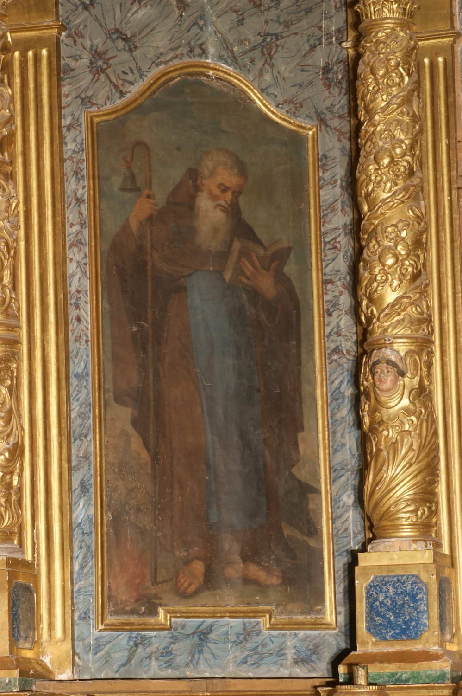

Sant Antoni Abat (251–356) va ser un anacoreta egipci. És conegut també com sant Antoni de Viana, nom que deriva de Vienne, a França, on es fundà a l’edat mitjana baix el seu patronatge l’Orde dels Canonges Regulars de Sant Antoni, o antonians; a Mallorca és també popularment conegut com sant Antoni dels Ases. Fill d’una família rica, en morir els seus pares repartí tota la seva herència entre els pobres i es retirà a viure al desert. És famós per les seves lluites contra el diable i les seves temptacions. Va ser el fundador del moviment dels anacoretes i el pare espiritual del monaquisme cristià, d’aquí el qualificatiu d’abat, malgrat que no ho va ser de cap monestir.
En aquesta pintura se’l representa com un ancià llegint un llibre, símbol de la Paraula de Déu, i amb un bastó d’ermità del qual penja una campaneta. Aquesta campaneta fa referència a la seva relació amb els monjos antonians, que identificaven amb campanetes els porcs que criaven per obtenir el greix amb què curaven el “foc de sant Antoni”, una intoxicació alimentària provocada pel consum de sègol contaminat per un fong paràsit. El foc que crema als seus peus simbolitza precisament aquesta malaltia. El porquet que l'acompanya, un dels atributs característics de sant Antoni Abat, fa referència, d'una banda, als porcs amb què els monjos antonians curaven el “foc de sant Antoni”, i de l'altra, a la llegenda segons la qual una truja li dugué un porcellet malalt: quan sant Antoni el beneí el porcellet se curà i des de llavors la truja sempre l'acompanyà.